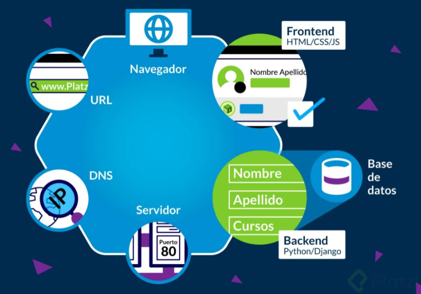

Esquema desarollo web.
¿Has escuchado alguna vez estos términos? El Back end y el Front end son dos partes fundamentales de la programación de una aplicación web. En este artículo vamos a hablar sobre cada una de ellas y explicaremos las diferencias entre Front end (el lado del cliente) y Back end (el lado del servidor).
Full Stack
Por otro lado, un desarrollador Full Stack es el encargado de manejar cada uno de los aspectos relacionados con la creación y el mantenimiento de una aplicación web. Para ello es fundamental que el desarrollador Full Stack tenga conocimientos en desarrollo Front-End y Back-End además de manejar diferentes sistemas operativos y lenguajes de programación.